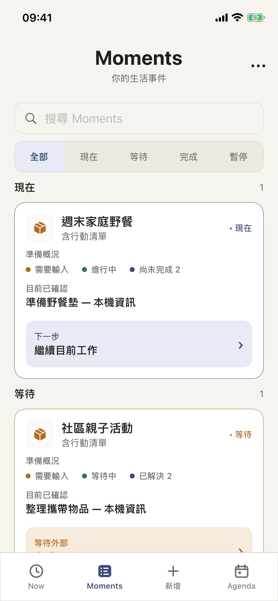
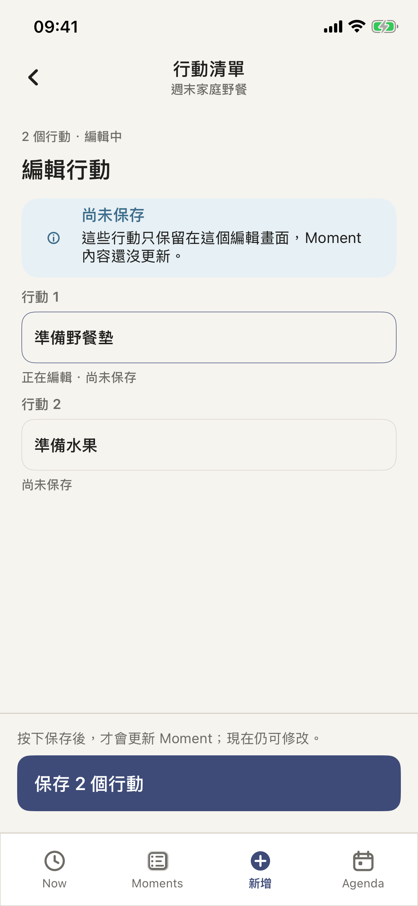
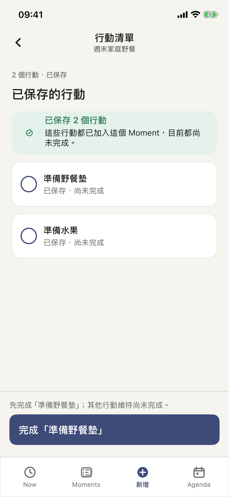
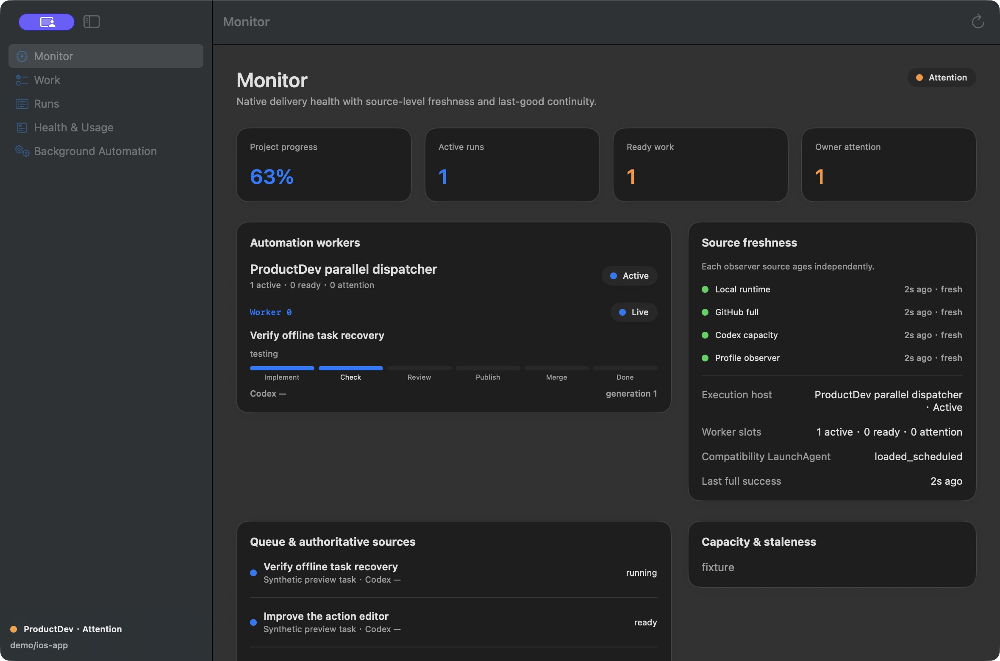
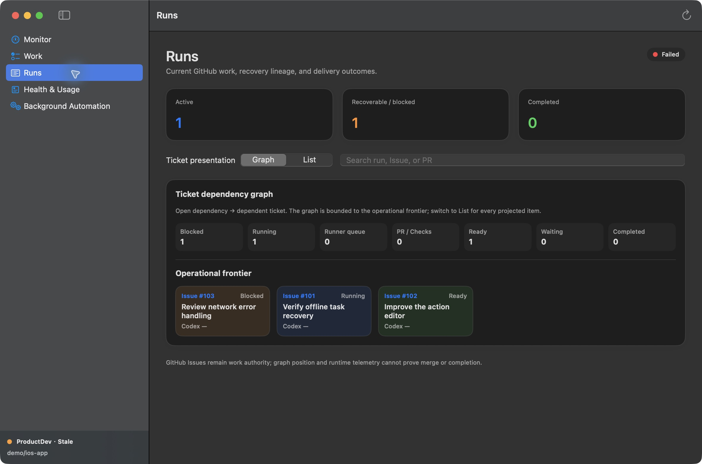
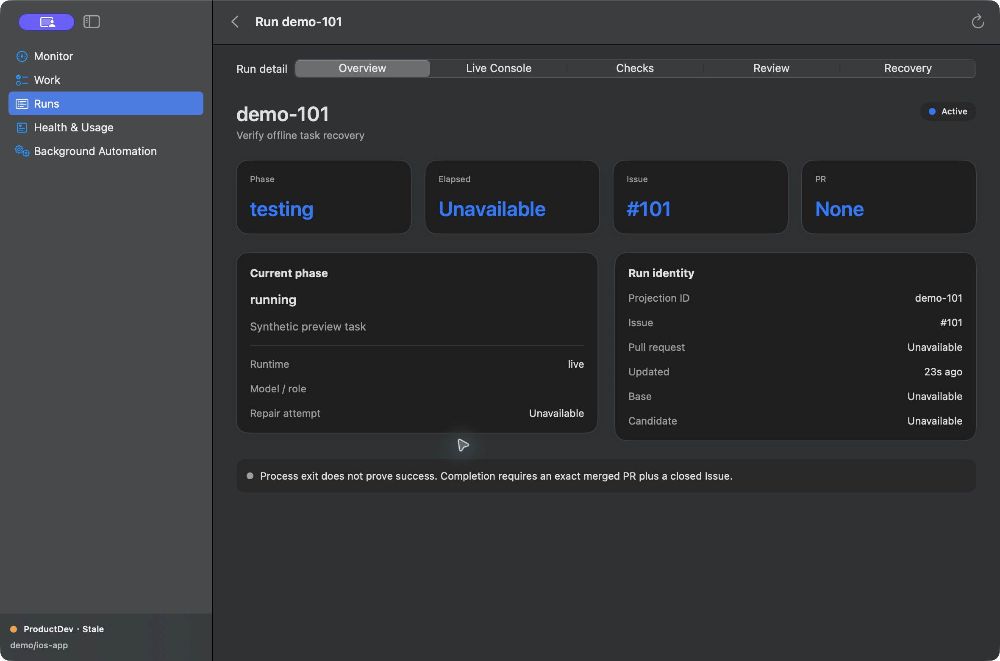
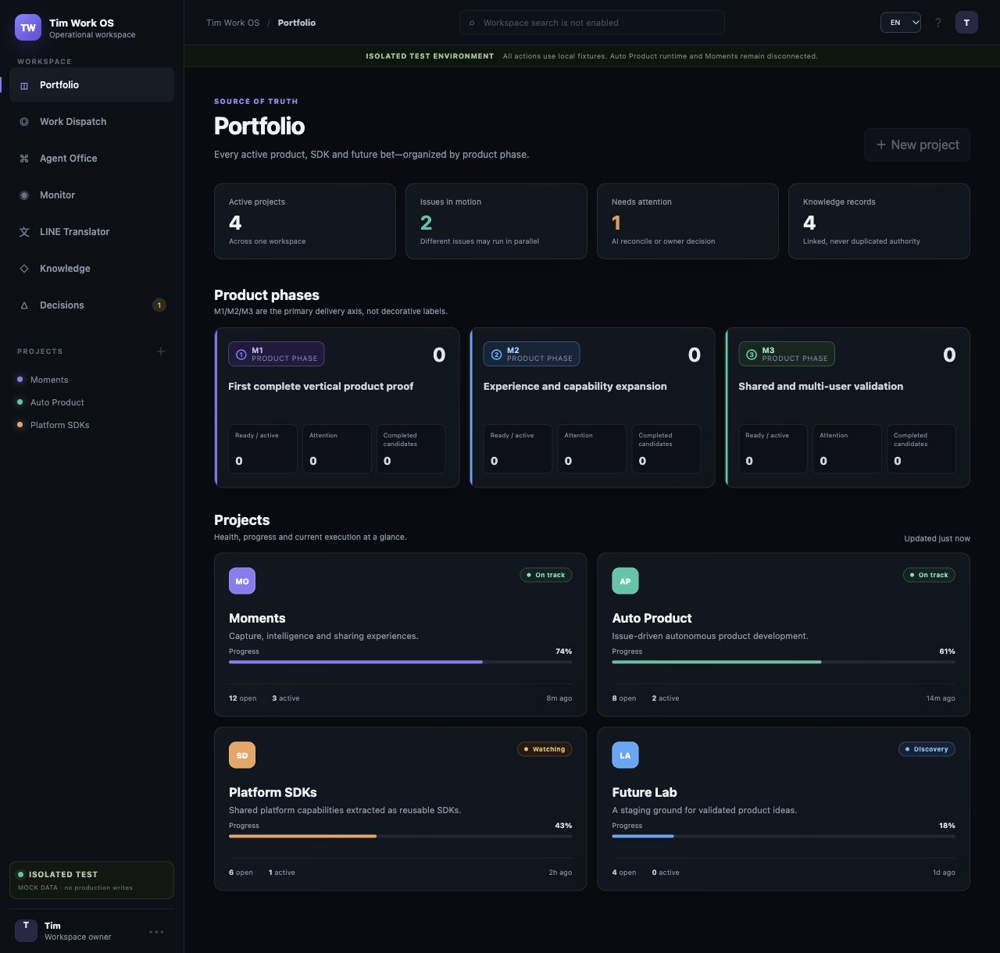
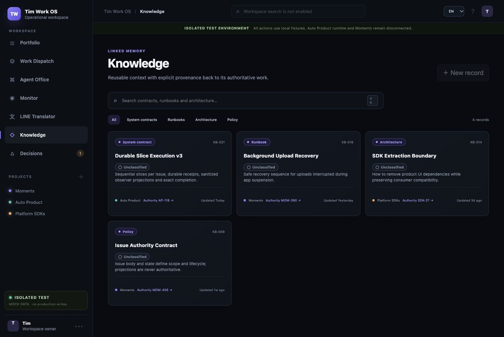
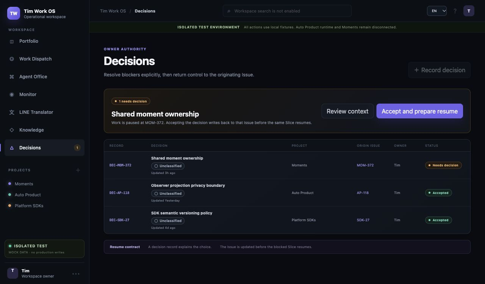

Scope & technical assessment
Have an idea but no clear specification? I help map the current workflow, identify the problem, and decide what belongs in the first version.
Deliverables: an agreed scope, technical options, and development priorities.
Timothy Yu · Software Consulting & Development
I develop mobile apps and internal tools, from requirements and API integration to testing and handover. Over ten years of mobile development, with production work on wallets, real-time betting, and connected vehicle apps.
SERVICES
Have an idea but no clear specification? I help map the current workflow, identify the problem, and decide what belongs in the first version.
Deliverables: an agreed scope, technical options, and development priorities.
Build a mobile app or improve an existing one: new features, API integration, troubleshooting, and performance work.
Deliverables: working software, agreed tests, and handover documentation.
Connect the tools you already use, reduce repeated data entry, or build a small internal tool for a specific workflow.
Deliverables: a bot, API integration, or an internal tool for the agreed workflow.
SELECTED WORK
Independent projects for life planning, family communication, and my development workflow.
Turn a life event into an editable preparation list.
Moment organizes preparation for trips, family activities, and other life events. Edit individual actions, save the plan, and return to its progress and next step. The screens show a picnic plan and its action editor.
A picnic plan, its progress, and the next action.

Edit each action before saving the list.

The saved list keeps both picnic actions together.

Translate Chinese and Indonesian in the same LINE chat.
Built for everyday communication in my family. A Chinese message receives an Indonesian translation; an Indonesian message receives Traditional Chinese. Tested in personal chats and a family group. Access is limited to approved users and groups.
Inspect runs, checks, and recovery records from your Mac.
A macOS tool for my repository automation. Monitor shows task status; Runs opens execution details, checks, and error records. It helps locate a stalled task without searching through separate terminal windows.
View running, ready, and blocked work together.

The graph groups tasks by their execution state.

Inspect its phase, Issue, and available runtime fields.

Keep project progress, tasks, and decisions in one workspace.
An internal workspace for managing several software projects. Move from the project overview to work items, knowledge records, and decisions.
See project status and the work needing attention.

Browse the knowledge records collected for each project.

Review pending decisions alongside their project context.

SELECTED COMPANY PRODUCTS
Selected contributions made as part of engineering teams across self-custodial wallets, real-time betting, and connected mobility.

Owned iOS Earn across multiple blockchain protocols. Shipped staking, rewards, position management, and Buy & Swap for a self-custodial wallet.

Built live odds, open bets, and betting-history synchronization. Prevented duplicated WebSocket updates across multiple betting slips and evolved legacy modules.

Delivered vehicle usage tracking, vehicle status, and in-app guidance for a connected vehicle application on a focused three-month production cycle.
WORKING TOGETHER
Start with who uses it, how the work gets done today, and where it gets stuck. You do not need a finished specification to start the conversation.
Decide whether you need technical advice or implementation, then agree on scope, deliverables, timeline, and fees before development starts.
Review working versions against the agreed criteria. Include the setup and handover information needed to use and maintain the result.
LET'S TALK
Include who will use it, the workflow or feature you need, any existing systems, and your target timeline. I can help define the scope and technical approach.